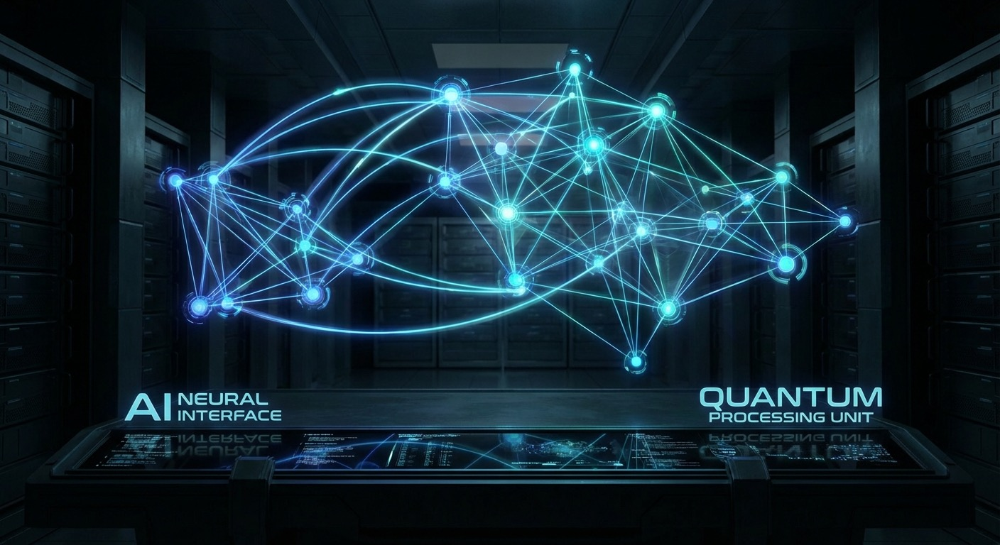

📡 真实新闻
本周AI热点速递
2026年3月18日 — 3月21日

热点 01
AI创业吞噬风投市场
1280亿美元 · 占比41%
据TechCrunch报道，2025年AI创业公司在Carta平台上融资总额达1280亿美元，占全年风投总额的41%——创历史最高年度占比。投资人对AI赛道的狂热仍在加速。
🧠 创业者视角
好消息：钱在涌入AI赛道。坏消息：竞争也在疯狂加剧。如果你的项目没有明确的技术壁垒，融资窗口正在收窄。
来源：
TechCrunch
· 2026-03-20
热点 02
LeCun创办AMI Labs，种子轮融10.3亿美元
10.3亿美元种子轮 · 欧洲史上最大
图灵奖得主、Meta首席AI科学家Yann LeCun创办AMI Labs，首轮融资10.3亿美元，创欧洲种子轮历史纪录。该公司押注"世界模型"架构，认为基于JEPA的世界模型将超越大语言模型，实现真正的通用智能。
🧠 创业者视角
LeCun亲自下场创业，说明"后LLM时代"的技术路线之争已经白热化。世界模型 vs 大语言模型——这场赌注的胜负，可能决定未来5年AI创业的方向。
来源：
AI Funding Tracker
· 2026-03-17
热点 03
AI安全独角兽Xbow估值破10亿
估值超10亿美元
AI安全创业公司Xbow完成新一轮融资，估值突破10亿美元。Xbow利用AI自动发现软件安全漏洞，展现了投资者对AI安全赛道的强烈兴趣。
🧠 创业者视角
AI安全是最被低估的赛道之一。当所有人都在做"AI生成"时，"AI安全"反而是差异化的蓝海。安全领域的客单价和续约率远高于消费类AI。
来源：
Bloomberg
· 2026-03-18
热点 04
前Anthropic团队创办Mirendil，瞄准AI科学发现
1.75亿美元 · 估值10亿
前Anthropic研究员创办Mirendil，正在以10亿美元估值融资1.75亿美元，专注于用AI加速科学发现。从大模型公司出走创业的趋势正在加速。
🧠 创业者视角
大模型公司的人才外溢是创业者的机会信号。这些人看到了大公司看不到（或不想做）的垂直场景。AI+科研、AI+生物、AI+材料——下一个万亿赛道可能就藏在这些"出走者"的创业项目里。
来源：
Tech Startups
· 2026-03-18